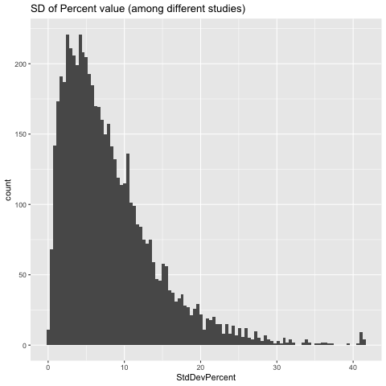

Creation of active gene-lists
Table of Contents
1 Active/Inactive Gene lists
Our aim is to create a unified table that assigns to each gene in the P.falicparum gnome a expresion state. We will define 4 possible expresion states:
- Active
- Regular
- Variant Active
- Variant Repressed
- Inactive
1.1 Microarray Data: Red Signal
We willl load the red signal and transform it into percentiles. For each gene we pick the "Aver.2Higher" column from the original microarrays data table. This column corresponds to the average between the two highest red signals among available timepoints.
Red Signal DataFrame
Gene_id Red_12B Red_10G Red_3D7B Percent_12B
1 mal_mito_3 22579.33333 36436.73333 30636.82500 96.0335622
2 MAL13P1.415_oldname 770.82083 702.22292 640.11667 21.3196034
3 MAL13P1.65_oldname 111.33333 87.05833 91.05833 6.2166285
4 MAL7P1.142_oldname 5924.44167 5194.40000 5114.63333 75.4767353
5 MAL8P1.310_oldname 37.21250 35.37917 33.24167 0.8581236
6 MAL8P1.90_oldname 80.55417 46.18333 54.64167 4.1952708
Percent_10G Percent_3D7B MaxRedPercentDif
1 98.474447 97.8832952 2.4408848
2 20.861937 18.4591915 2.8604119
3 5.053394 4.5194508 1.6971777
4 72.444699 71.7200610 3.7566743
5 1.115561 0.5911518 0.5244088
6 2.002288 2.2501907 2.1929825
1.2 Microarray Data: Areas
We will load the areas data to calculate FC among strains. For each gene, we select the time interval (right, left, mid or sides) for which we find the maximum difference among strains (between highest and lowest). We will also add a column to check if this time interval corresponds to the interval of maxium expression for each strain.
Areas DataFrame
Gene_id l_12B r_12B m_12B s_12B l_10G r_10G
1 mal_mito_3 30.592496 61.080128 49.676556 41.99607 25.372470 62.38873
2 MAL13P1.415_oldname 5.423269 8.488971 1.289779 12.62246 6.117132 10.59524
3 MAL13P1.65_oldname 18.322430 NA 17.593468 NA 14.071128 NA
4 MAL7P1.142_oldname 9.389247 12.807814 10.340803 11.85626 13.661078 14.52676
5 MAL8P1.310_oldname NA NA NA NA NA NA
6 MAL8P1.90_oldname NA NA NA NA NA NA
m_10G s_10G l_3D7B r_3D7B m_3D7B s_3D7B MaxLeft MinLeft
1 49.805504 37.95570 25.484634 62.83441 50.462696 37.856349 30.592496 25.372470
2 3.676218 13.03616 1.789873 10.51234 3.691753 8.610459 6.117132 1.789873
3 NA NA 19.333324 NA NA NA 19.333324 14.071128
4 13.401610 14.78623 7.099032 13.34518 12.041177 8.403034 13.661078 7.099032
5 NA NA NA NA NA NA NA NA
6 NA NA NA NA NA NA NA NA
MaxRight MinRight MaxMid MinMid MaxSides MinSides DifLeft DifRight
1 62.83441 61.080128 50.462696 49.676556 41.99607 37.856349 5.220025 1.754283
2 10.59524 8.488971 3.691753 1.289779 13.03616 8.610459 4.327259 2.106274
3 NA NA NA NA NA NA 5.262196 NA
4 14.52676 12.807814 13.401610 10.340803 14.78623 8.403034 6.562046 1.718950
5 NA NA NA NA NA NA NA NA
6 NA NA NA NA NA NA NA NA
DifMid DifSides Interval MaxDif areaFC area_12B area_10G area_3D7B
1 0.7861401 4.139719 Left 5.220025 0.3881060 30.592496 25.37247 25.484634
2 2.4019733 4.425700 Sides 4.425700 0.3290483 12.622460 13.03616 8.610459
3 NA NA Left 5.262196 0.3912413 18.322430 14.07113 19.333324
4 3.0608067 6.383199 Left 6.562046 0.4878845 9.389247 13.66108 7.099032
5 NA NA No Data NA NA NA NA NA
6 NA NA No Data NA NA NA NA NA
MaxArea MinArea
1 30.59250 25.372470
2 13.03616 8.610459
3 19.33332 14.071128
4 13.66108 7.099032
5 NA NA
6 NA NA
1.3 Load RNA-Seq Data
We will use publicly available data from PlasmoDB to create a reference expresion percentile for each gene. All data-sets are from RNA-Seq studies in the 3D7 strain. We are using 4 different data-sets:
- Otto et.al.
- Hoeijmakers et.al.
- Toenhake et.al.
- Bartfai et.al.
RNA-Seq DataFrame
Gene_id MaxPercOtto MaxPercHoej MaxPercToen MaxPercBart MeanPercent
1 PF3D7_0100100 57.2 54.3 33.9 31.7 44.275
2 PF3D7_0100200 29.4 50.5 26.6 36.0 35.625
3 PF3D7_0100300 34.2 8.7 7.7 7.4 14.500
4 PF3D7_0100400 50.3 18.3 11.3 37.4 29.325
5 PF3D7_0100500 49.7 11.4 14.0 32.5 26.900
6 PF3D7_0100600 18.5 7.8 2.3 12.1 10.175
StdDevPercent
1 11.546942
2 9.241313
3 11.383980
4 15.424068
5 15.474657
6 5.930167
We plot the standard deviation of the percentile values among different studies and we can see that for the vast majority of genes it doesn't go above 10.

1.4 Create Lists according to thresholds
Now that we have all the data loaded in, we can star to set labels for each gene.
We have set the following thresholds:
- (rna_pcnt) RNA-Seq mean percentile: 25%
- (red_pcnt) Red Signal Percentile (by sample): 25%
- (red_rescue) Red Signal Percentile (by sample) for "rescuing": 40%
- (red_dif) Red Signal percentile diference: 0 (we are currently not using it but it is set, just in case)
- (area_fc) Area log2 Fold-Change: 1
In addition to these thresholds we will use 2 more columns to set the categories:
- Variant: a column stating if gene is variant/non-variant
- Relative Expression: a colum were each gene is set to min/mid/max according to it's expression level relative to the other strains.
We will have the following categories with the following logic:
- Active :
- Regular
- Non-Variant
- > rna_pcnt
- Variant Active
- Case 1 (no area_fc):
- Variant
- < area_fc
- > rna_pcnt
- Case 2 (no area_fc, rescued):
- Variant
- < area_fc
- < rna_pcnt
- > red_rescue
- Case 3 (area_fc, max):
- Variant
- > area_fc
- > red_dif
- > red_pcnt
- rel_exprs = max
- Case 4 (area_fc, mid):
- Variant
- > area_fc
- > red_dif
- > red_pcnt
- rel_exprs = mid
- Case 1 (no area_fc):
- Variant Repressed:
- Case 1 (no area_fc, no rescue):
- Variant
- < area_fc
- < rna_pcnt
- < red_rescue
- Case 2 (area_fc, rel_exprs = mid)
- Variant
- > area_fc
- > red_dif
- > red_pcnt
- rel_exprs = min
- Case 3 (area_fc, low red_pcnt)
- Variant
- > area_fc
- > red_dif
- < red_pcnt
- Case 1 (no area_fc, no rescue):
- Regular
- Inactive:
- Non-Variant
- < rna_pcnt
- Not Settable:
- area_fc OR rna_pcnt are not set (NA).
2 Code
2.1 Load Packages and functions
#### Imports #### library(readxl) library(tidyverse) #### Max Dif function #### max_dif <- function(vect){ mx <- max(vect, na.rm = T) mn <- min(vect, na.rm = T) if (is.infinite(mx) | is.infinite(mn)) { md <- NA } else { md <- mx - mn } return(md) }
2.2 Microarray Data: Red Signal
#### Red Signal DF #### ## Read translation table map <- read.csv('./Data/oldnames_table.csv') excl <- "./Data/3D7_Variantome_AllData_withGam.xls" ## Import Red Signal table red <- read_excel(excl, sheet = 4) colnames(red)[1] <- "Old_id" red_df <- red %>% select(Old_id, Red_12B = `Aver.2Higher1.2B.`, Red_10G = `Aver.2Higher10G.`, Red_3D7B = `Aver.2Higher3D7-B.`) %>% left_join(map, by='Old_id') %>% select(-Old_id) %>% group_by(Gene_id) %>% summarize_all(list(mean)) ## Transform into percentiles red_df <- red_df %>% mutate(Percent_12B = (rank(Red_12B)/length(Red_12B))*100) %>% mutate(Percent_10G = (rank(Red_10G)/length(Red_10G))*100) %>% mutate(Percent_3D7B = (rank(Red_3D7B)/length(Red_3D7B))*100) ## Add max percentile dif red_df <- red_df %>% mutate(MaxRedPercentDif= apply(select(., contains('Percent_')), 1, max_dif)) print(red_df, width = 200)
2.3 Microarray Data: Areas
#### Areas DF #### # Import Areas table area <- read_excel(excl, sheet = 2) colnames(area)[1] <- "Old_id" area_df <- area %>% select(Old_id, l_12B = `left.1.2b`, r_12B = `right.1.2b`, m_12B = `mid.1.2b`, s_12B = `sides.1.2b`, l_10G = `left.10g`, r_10G = `right.10g`, m_10G = `mid.10g`, s_10G = `sides.10g`, l_3D7B = `left.3d7b`, r_3D7B = `right.3d7b`, m_3D7B = `mid.3d7b`, s_3D7B = `sides.3d7b`) %>% mutate_at(vars(-Old_id), as.numeric) %>% left_join(map, by='Old_id') %>% select(-Old_id) %>% group_by(Gene_id) %>% summarize_all(list(mean)) print(area_df, width = 200) area_df <- area_df %>% mutate(MaxLeft = apply(select(., contains('l_')), 1, max)) %>% mutate(MinLeft = apply(select(., contains('l_')), 1, min)) %>% mutate(MaxRight = apply(select(., contains('r_')), 1, max)) %>% mutate(MinRight = apply(select(., contains('r_')), 1, min)) %>% mutate(MaxMid = apply(select(., contains('m_')), 1, max)) %>% mutate(MinMid = apply(select(., contains('m_')), 1, min)) %>% mutate(MaxSides = apply(select(., contains('s_')), 1, max)) %>% mutate(MinSides = apply(select(., contains('s_')), 1, min)) %>% mutate(DifLeft = MaxLeft - MinLeft) %>% mutate(DifRight = MaxRight - MinRight) %>% mutate(DifMid = MaxMid - MinMid) %>% mutate(DifSides = MaxSides - MinSides) print(area_df, width = 200) ## Add max interval and difference maxinterval <- area_df %>% select(Gene_id, contains('Dif')) %>% pivot_longer(-Gene_id, names_to = 'Interval', values_to = 'MaxDif') %>% group_by(Gene_id) %>% filter(rank(-MaxDif, ties.method = "first") == 1) %>% mutate(Interval = ifelse(is.na(MaxDif), 'No Data', Interval)) %>% mutate(Interval = case_when(Interval == 'DifLeft' ~ 'Left', Interval == 'DifRight' ~ 'Right', Interval == 'DifMid' ~ 'Mid', Interval == 'DifSides' ~ 'Sides', Interval == 'No Data' ~ 'No Data')) %>% mutate(areaFC = MaxDif/13.45) maxinterval area_df <- area_df %>% left_join(maxinterval, by = 'Gene_id') print(area_df, width = 400) ## Select appropiate area for each gene and add max and min areas area_df <- area_df %>% mutate(area_12B = case_when( Interval == 'Left' ~ l_12B, Interval == 'Right' ~ r_12B, Interval == 'Mid' ~ m_12B, Interval == 'Sides' ~ s_12B, Interval == 'No Data' ~ NA_real_)) %>% mutate(area_10G = case_when( Interval == 'Left' ~ l_10G, Interval == 'Right' ~ r_10G, Interval == 'Mid' ~ m_10G, Interval == 'Sides' ~ s_10G, Interval == 'No Data' ~ NA_real_)) %>% mutate(area_3D7B = case_when( Interval == 'Left' ~ l_3D7B, Interval == 'Right' ~ r_3D7B, Interval == 'Mid' ~ m_3D7B, Interval == 'Sides' ~ s_3D7B, Interval == 'No Data' ~ NA_real_)) %>% mutate(MaxArea = apply(select(., contains('area_')), 1, max)) %>% mutate(MinArea = apply(select(., contains('area_')), 1, min)) print(area_df, width = 400)
2.4 Load RNA-Seq Data
#### Load Data-Sets #### otto <- read_delim("./Data/RNA_Seq_Percentiles/PlasmoDB_Otto.csv", delim=";") %>% select(Gene_id = `Gene ID`, MaxPercOtto = `Max %ile (Within Chosen Samples)`) hoej <- read_delim("./Data/RNA_Seq_Percentiles/PlasmoDB_Hoejimakers.csv", delim=";") %>% select(Gene_id = `Gene ID`, MaxPercHoej = `Max %ile (Within Chosen Samples)`) toen <- read_delim("./Data/RNA_Seq_Percentiles/PlasmoDB_Toenke.csv", delim=";") %>% select(Gene_id = `Gene ID`, MaxPercToen = `Max %ile (Within Chosen Samples)`) bart <- read_delim("./Data/RNA_Seq_Percentiles/PlasmoDB_Bartfai.csv", delim=";") %>% select(Gene_id = `Gene ID`, MaxPercBart = `Max %ile (Within Chosen Samples)`) ## Join DF rna_df <- full_join(otto, hoej) %>% full_join(hoej) %>% full_join(toen) %>% full_join(bart) ## Add mean and sd rna_df <- rna_df %>% mutate(MeanPercent = apply(select(., -Gene_id), 1, mean)) %>% mutate(StdDevPercent = apply(select(., -Gene_id), 1, sd)) print(rna_df, width=200)
2.5 Create Join DF
red_df print(area_df, width = 200) rna_df all_df <- select(red_df, Gene_id, contains('Percent')) %>% full_join(select(area_df, Gene_id, Interval, contains('area')), by = 'Gene_id') %>% full_join(select(rna_df, Gene_id, MeanPercent), by = 'Gene_id') ## Add Vartiant Genes information cvg <- read_excel("./Data/CVG_list_jan2020_final.xlsx", sheet = "Final") final_df <- cvg %>% select("Gene_id" = `Gene ID`, "Variant" = `Final Customized`) %>% right_join(all_df, by = 'Gene_id') %>% mutate(Variant = recode(Variant, YES = TRUE, NO = FALSE, .missing = FALSE)) print(final_df, width = 200)
2.6 Create Lists according to thresholds
print(final_df, width = 200) th_rnapcnt <- 25 th_redpcnt <- 25 th_redrescue <- 40 th_red_difpcnt <- 0 th_areaFC <- 1 ## Set state for each gene and strain ## Here we create a couple of dplyr functions. ##To be able to use variables (for colnames) we needto use the special quote functions. ## Colnames to use inside functions must be "enquoted" before usage and preceded by !! when used. ## Colnames to assign must be "enquoted" first, preceded by !! and assigned by := ## First create a col where we set categories for each gene according relative expression ## For each gene: gene-min----|---mid----|----gene-max relexprs <- function(vect){ if (any(is.na(vect))){ return(NA) } else { labs = c('min', 'mid', 'max') lab <- cut(vect, 3, labels = labs)[1] return(as.character(lab)) } } set_relexprs <- function(df, outcol, areacol){ outcol <- enquo(outcol) areacol <- enquo(areacol) df %>% mutate(!! outcol := apply(select(., !! areacol, MaxArea, MinArea), 1, relexprs)) } final_df <- final_df %>% set_relexprs(rel_12B, area_12B) %>% set_relexprs(rel_10G, area_10G) %>% set_relexprs(rel_3D7B, area_3D7B) print(final_df, width = 200) ## We now set each gene to it's state set_state <- function(df, statecol, redcol, relcol){ statecol <- enquo(statecol) redcol <- enquo(redcol) relcol <- enquo(relcol) df <- df %>% mutate(!! statecol := case_when( ## Actiu !Variant & MeanPercent >= th_rnapcnt ~ 'Active', ## Inactiu !Variant & MeanPercent < th_rnapcnt ~ 'Inactive', ## Var actiu Variant & areaFC < th_areaFC & MeanPercent >= th_rnapcnt ~ 'Var_Active', # noFC Variant & areaFC < th_areaFC & MeanPercent < th_rnapcnt & !! redcol >= th_redrescue ~ 'Var_Active', # noFC, rescued Variant & areaFC >= th_areaFC & MaxRedPercentDif >= th_red_difpcnt & !! redcol >= th_redpcnt & !! relcol == 'max' ~ 'Var_Active', # Variant, FC, redpcnt, max Variant & areaFC >= th_areaFC & MaxRedPercentDif >= th_red_difpcnt & !! redcol >= th_redpcnt & !! relcol == 'mid' ~ 'Var_Semiactive', # Variant, FC, redpcnt, mid ## Var repressed Variant & areaFC < th_areaFC & MeanPercent < th_rnapcnt & !! redcol < th_redrescue ~ 'Var_Repressed', # noFC, noRescued Variant & areaFC >= th_areaFC & MaxRedPercentDif >= th_red_difpcnt & !! redcol >= th_redpcnt & !! relcol == 'min' ~ 'Var_Repressed', # Variant, FC, redpcnt, min Variant & areaFC >= th_areaFC & MaxRedPercentDif >= th_red_difpcnt & !! redcol < th_redpcnt ~ 'Var_Repressed', # Variant, FC, NOredpcnt ## Not settable is.na(areaFC) | is.na(MeanPercent) ~ 'Not_settable', TRUE ~ 'Wrong!')) return(df) } state_df <- final_df %>% set_state(state_12B, Percent_12B, rel_12B) %>% set_state(state_10G, Percent_10G, rel_10G) %>% set_state(state_3D7B, Percent_3D7B, rel_3D7B) state_df %>% filter(state_12B == 'Wrong!' | state_10G == 'Wrong!' | state_3D7B == 'Wrong!') %>% print(width = 200) ## The 'TRUE ~ ...' handles rows that do not match any of previous patterns. ## Here we use it to make sure all rows are set (no "Wrong!" appearing) table(state_df$state_3D7B) table(state_df$state_12B) table(state_df$state_10G) write.csv(state_df, './Results_Tables/state_df_rna25_red25_reddif0_area1.csv') print(state_df, width = 200) state_df %>% filter(state_12B != state_10G) %>% select(contains('12B'), contains('10G')) %>% write.csv('./Results_Tables/gens_dif12B_10G.csv') state_df %>% filter(Gene_id == 'PF3D7_0302500' | Gene_id == 'PF3D7_0302200') %>% write.csv('./Results_Tables/clag_genes.csv')